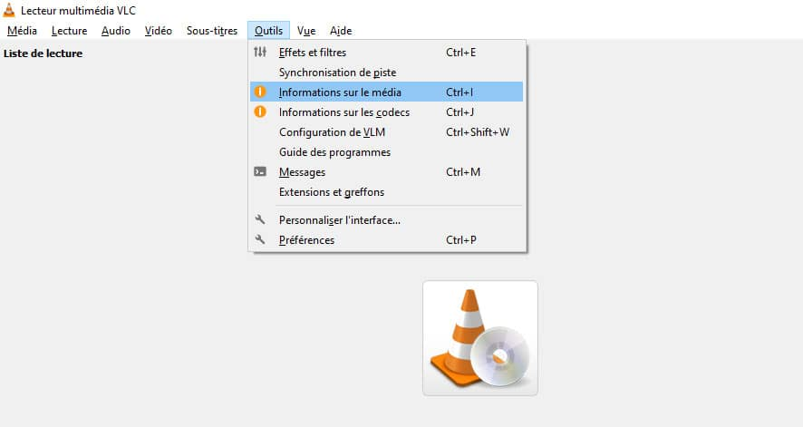
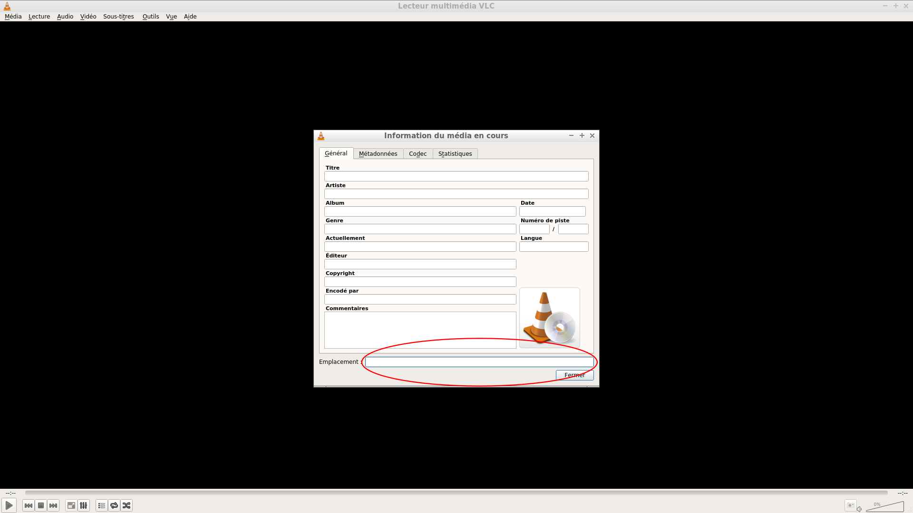
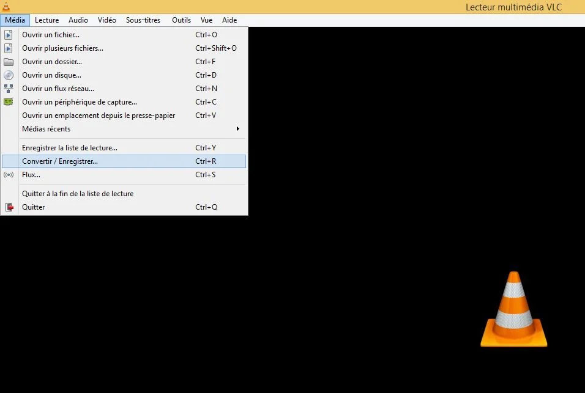

Table des matières :
1. Ouvrir une vidéo Youtube avec VLC Media Player ;
2. Trouver puis copier l'emplacement de la vidéo ;
3. Convertir la vidéo en MP3, MP4, OGG, VMA... ;
4. youtube.lua
1. Ouvrir une vidéo Youtube avec VLC Media Player :
Copiez le lien de la vidéo Youtube que vous souhaitez télécharger (clic droit et Copier l'URL de la vidéo). Allez dans le Menu "Média" puis allez dans "Ouvrir un flux réseau..." (ou tout simplement, faites Ctr+N). Collez l'URL de la vidéo Youtube et cliquez sur "Lire". La vidéo va se lancer quelques secondes après que vous ayez cliqué sur "Lire". Il est néanmoins possible qu'il y ait des coupures pendant la lecture.


2. Trouver puis copier l'emplacement de la vidéo :
Allez dans le menu "Outils" puis allez dans "Informations sur les médias" (ou tout simplent Ctr+I). Copiez le contenu de la case "Emplacement :". Allez dans le menu "Média" puis allez dans "Convertir / Enregistrer" (ou tout simplent Ctr+R). Cliquez dans "Réseau" et collez l'emplacement copié dans "Informations sur les médias". Cliquez sur la case "Convertir / Enregistrer".
  
3. Convertir la vidéo en MP3, MP4, OGG, VMA... :
Choisissez le format pour créer votre fichier (MP3 :Audio ; MP4 :Vidéo ; etc...). Choisissez où enregistrer le fichier (cliquez sur parcourir et choisisssez la destination où vous voulez enregistrer le fichier). Cliquez sur "Démarrer".Pour savoir quand le téléchargement est fini, vous devez regarder la progression de la barre bleue en bas de la page. Si elle n'est pas là, c'est que le téléchargement est terminé.

youtube.lua :
Pour lire ou enregistrer des vidéos youtube, il faut télécharger le fichier le plus récent à l'emplacement : "/usr/lib/vlc/lua/playlist"(si vous êtes sous linux 16), "/usr/lib/x86_64-linux-gnu/vlc/lua/playlist" (si vous ètes sur liux 20), "/home/'Votre nom d'utilisateur'/.local/share/vlc/lua/playlist/youtube.lua" (si vous êtes sous linux 22), ou C:\Program Files\VideoLAN\VLC\lua\playlist (si vous êtes sous windows 10). S'il y a un ancien "youtube.lua" plus valide, il faut le supprimer et le changer par le nouveau (quand on ne peut plus lire les vidéos Youtube, il faut changer le "youtube.lua"). ATTENTION : il faut être administrateur pour écrire et supprimer des fichiers dans ce dossier. Si vous ètes sous linux il faut aller sur le compte du administrateur, aller dans le terminal (Ctr+Alt+T) et faire la commande "sudo pcmanfm".Il renseignera VLC de trouver l'emplacement des vidéos. Si vous ètes sous windows il faut faire un clic droit sur l'icone de l'explorateur de fichiers et choisir "executer en tant qu'administrateur et taper son mot de passe."
 ←Télécharger Youtube.lua
←Télécharger Youtube.lua